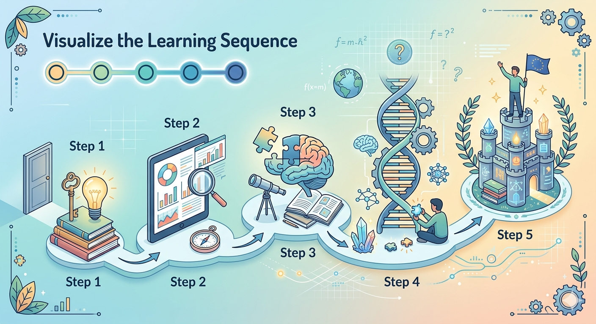
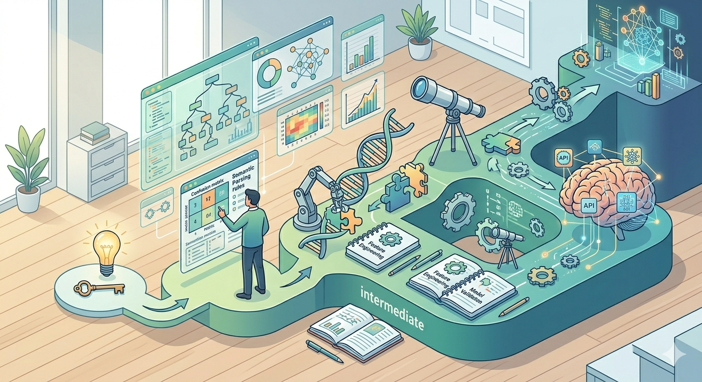
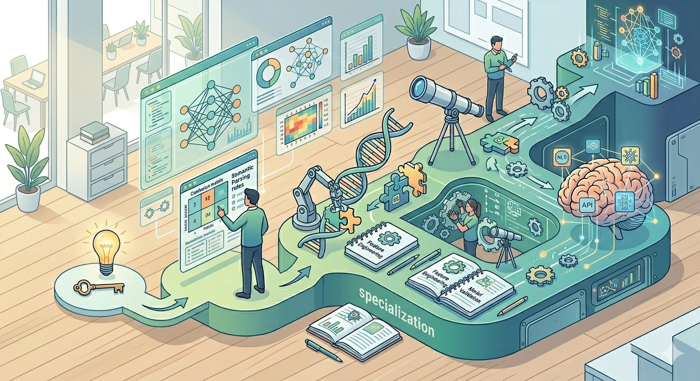

1
Programlama ve web temeli
HTML, CSS, temel algoritma mantığı ve Python hazırlığı ile yazılım düşüncesi oluştur.
- HTML etiketleri ve sayfa yapısı
- CSS, box model ve Flexbox
- Temel algoritmik düşünme
- Python öğrenmeye hazırlık
Bu yol haritası, önce temel becerileri kazanmanı, sonra ilgi alanına göre uzmanlık seçmeni ve en sonunda portfolyo oluşturmanı hedefler.

Bir konuyu tamamen bitirmeden diğerine geçmek zorunda değilsin. Ancak programlama, veri okuryazarlığı ve temel matematik olmadan ileri yapay zekâ konularına geçmek zorlaşır.
Adımlar, yapay zekâ ve veri bilimi yol haritalarında sık görülen temel öğrenme sırasına göre düzenlenmiştir.
HTML, CSS, temel algoritma mantığı ve Python hazırlığı ile yazılım düşüncesi oluştur.
Yapay zekâ modellerinin mantığını anlayabilmek için temel matematik ve istatistik konularını öğren.
Veriyi okumak, temizlemek ve yorumlamak yapay zekâ projelerinin temelidir.
Model kurma, model eğitme, tahmin yapma ve model başarısını değerlendirme konularını öğren.
NLP, Computer Vision ve Generative AI gibi alanlara geçmeden önce sinir ağı mantığını kavra.
Temeli oluşturduktan sonra ilgi alanına göre bir uzmanlık yönü belirle.
Öğrendiklerini gösteren küçük ama tamamlanmış projeler üret.
Zaman aralıkları yaklaşık verilmiştir; önemli olan düzenli ilerleme ve proje üretmektir.
HTML, CSS, temel programlama mantığı, Python giriş ve veri okuryazarlığı.
0-3 ay
İstatistik, veri analizi, makine öğrenmesi algoritmaları ve model değerlendirme.
3-8 ay
NLP, Computer Vision, Generative AI veya MLOps alanlarından birinde proje geliştirme.
8 ay ve üzeri